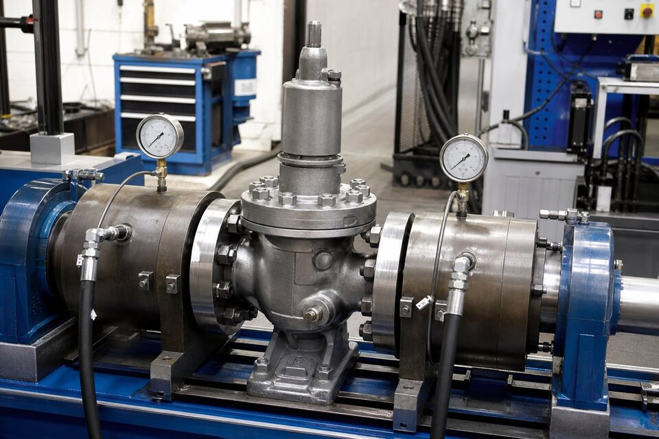

چرا تست شیر اهمیت دارد؟
شیر تجهیز ایمنی و عملیاتی حساسی است: نشتی بدنه میتواند به حادثه منجر شود و نشتی نشیمنگاه، ایزولاسیون خط را بیاثر میکند. تستهای کارخانهای، سلامت شیر را پیش از ورود به خط اثبات میکنند و مبنای مقایسه پیشنهادها را میسازند. در پروژههای صنعتی، گزارش تست بخشی از مدارک اجباری تحویل است و شیر بدون تست معتبر، در بازرسی ورودی پذیرفته نمیشود. شناخت انواع تست و معیارهای آن، خریدار را قادر میسازد مدارک درست را مطالبه کند.

تست پوسته (Shell)
در تست پوسته، هدف اثبات سلامت بدنه و اتصالات آن است. شیر در وضعیت نیمهباز قرار میگیرد تا محفظه داخلی تحت فشار قرار گیرد و فشار تست — معمولاً با ضریبی بالاتر از فشار نامی — به مدت مشخص نگه داشته میشود. بازرسی بصری بدنه، بونت و اتصالها برای یافتن هرگونه نشتی یا تعریق انجام میگیرد. این تست برای همه شیرها الزامی است و هیچ نشتیای در آن قابل پذیرش نیست؛ حتی یک قطره تعریق میتواند نشانه ضعف پوسته باشد.
تست نشیمنگاه (Seat)
در تست نشیمنگاه، شیر بسته شده و فشار به یک طرف نشیمنگاه اعمال میشود؛ مقدار عبوری از طرف دیگر، معیار ارزیابی است. بسته به مرجع و توافق، تست با آب یا هوا انجام میشود و معیار پذیرش بر اساس جدول نشتی همان مرجع تعیین میگردد. در شیرهای دوطرفه، تست هر دو جهت انجام میشود. نکته مهم این است که کلاس نشتی مورد انتظار باید پیش از خرید در سفارش ذکر شود؛ چون برخی مراجع فقط حداقلها را الزام میکنند و کلاسهای بالاتر، توافق جداگانه میخواهند.
تست آببندی بدنه و مدارک
علاوه بر پوسته و نشیمنگاه، آببندی محلهای اتصال بونت، پکینگ ساقه و گسکتها نیز کنترل میشود تا در شرایط تست نشتی نداشته باشند. نتیجه همه تستها باید در گزارشی مکتوب با ذکر فشار، سیال، مدت و معیار پذیرش ثبت گردد. در سفارشهای پروژهای، امکان بازرسی شخص ثالث یا حضور ناظر کارفرما در تست نیز پیشبینی میشود. هنگام ارزیابی پیشنهادها، گزارش تست را با مرجع ذکرشده در سفارش تطبیق دهید؛ تست بر اساس مرجع متفاوت، مبنای مقایسه یکسانی نیست.
چکلیست خریدار
- مرجع تست را در سفارش صریح ذکر کنید.
- کلاس نشتی نشیمنگاه مورد انتظار را تعریف کنید.
- گزارش تست با فشار، سیال، مدت و نتیجه را بخواهید.
- گواهی مواد را با کالای تحویلی تطبیق دهید.
- در پروژههای حساس، بازرسی شخص ثالث را در نظر بگیرید.
- گزارشهای بدون ذکر شرایط را نپذیرید.
جمعبندی
تست پوسته، نشیمنگاه و آببندی، سه رکن اثبات سلامت شیر پیش از تحویلاند. با تعریف مرجع تست و کلاس نشتی در سفارش و مطالبه گزارش کامل، خریدار از دریافت شیر سالم و مطابق مشخصه اطمینان پیدا میکند و از اختلاف در مرحله بازرسی ورودی جلوگیری میشود.
سوالات رایج
تست پوسته چیست؟
تست بدنه شیر با فشاری بالاتر از فشار کاری برای اطمینان از نبود نشتی یا ضعف در پوسته فلزی؛ شیر در وضعیت نیمهباز قرار میگیرد و محفظه داخلی تحت فشار قرار میگیرد.
تست نشیمنگاه چگونه انجام میشود؟
شیر بسته میشود و فشار به یک طرف نشیمنگاه اعمال میگردد؛ مقدار عبوری از طرف دیگر اندازهگیری و با معیار پذیرش مقایسه میشود. در بسیاری مراجع، تست هر دو جهت انجام میشود.
چرا تست با هوا حساستر است؟
گاز به دلیل ویسکوزیته کمتر و قابلیت نفوذ بالاتر، نشتیهای ریز را بهتر آشکار میکند؛ به همین دلیل در کلاسهای نشتی بالا یا معیارهای سختگیرانه، تست پنوماتیک انجام میشود.
چه مدارکی باید مطالبه شود؟
گزارش تست با ذکر فشار، سیال، مدت و نتیجه؛ گواهی مواد و در صورت توافق، معیار نشتی مورد استناد. گزارش بدون ذکر شرایط، قابل دفاع نیست.
مطالب مرتبط
- راهنمای تست و معیارهای نشتی شیرآلات
- مقایسه کلاس نشتی (Class I تا VI)
- تست آتش شیرآلات (API 607)
- معیارهای پذیرش تست نشتی
شیرآلات صنعتی با گزارش تست پوسته و نشیمنگاه مطابق مرجع تست، همراه گواهی مواد عرضه میشوند.
مشاهده صفحه محصول ← ثبت RFQ همین محصولتامین این تجهیزات را به پیشرو تجهیز فرتاک بسپارید
شرکت پیشرو تجهیز فرتاک تامینکننده تخصصی تجهیزات صنعتی برای پروژههای نفت، گاز، پتروشیمی، فولاد و نیروگاهی است. برای دریافت پیشنهاد فنی و قیمت، استعلام (RFQ) خود را ثبت کنید تا کارشناسان مهندسی فروش در کوتاهترین زمان پاسخ دهند.
- تامین شیرآلات صنعتیخانواده کامل شیر با گواهی مواد و تست
- تامین تجهیزات صنایع نفت و گازپکیج مواد مطابق وندورلیست